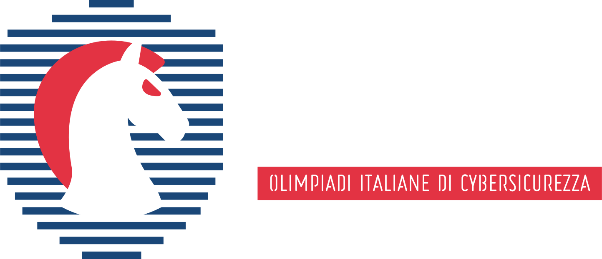
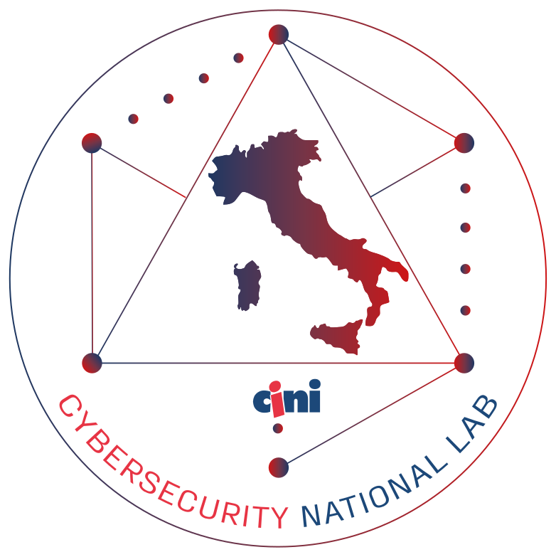

Attualmente non ho ancora esperienze lavorative ufficiali né ho intrapreso un percorso di alternanza scuola-lavoro (PCTO), ma mi impegno costantemente a migliorare le mie competenze attraverso progetti personali e stage scolastici, con l'intenzione di avvicinarmi al mondo lavorativo.
Mi piacerebbe lavorare in ambiti legati alla cybersecurity, allo sviluppo software o al networking, sfruttando le competenze acquisite sia a scuola che nei miei progetti personali. Inoltre, partecipo regolarmente a CTF e gare di cybersecurity organizzate da Olicyber e Cyberchallenge (Cybersecurity National Lab), arrivando anche alle nazionali di Olicyber.

